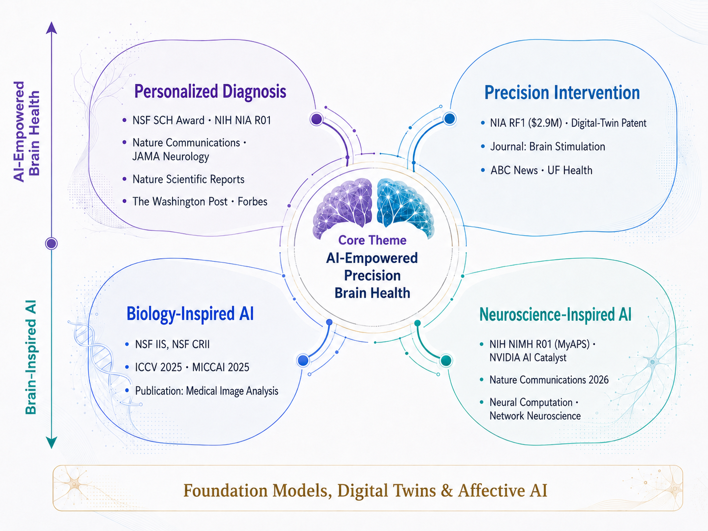
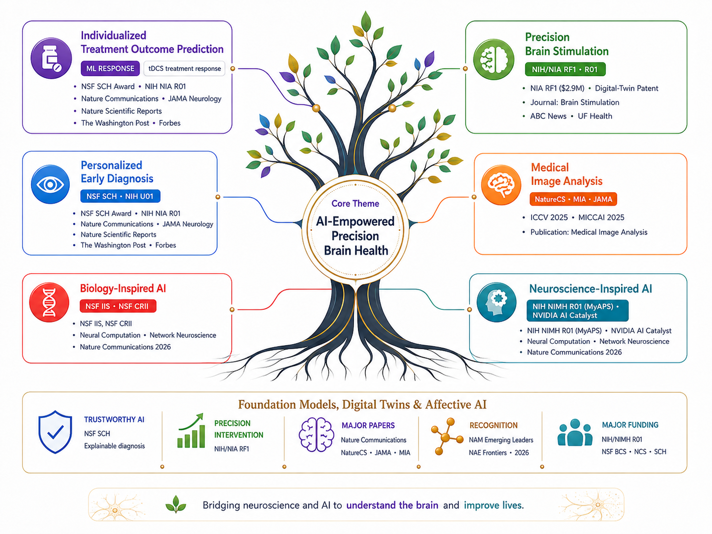

SMILE Lab
Research
Advancing AI for brain health and drawing inspiration from the brain to build better AI.
Research Summary
Interests
- AI-Empowered Brain Health
- Brain-Inspired AI
- Deep Learning
- Brain Dynamics
- Medical Image Analysis

